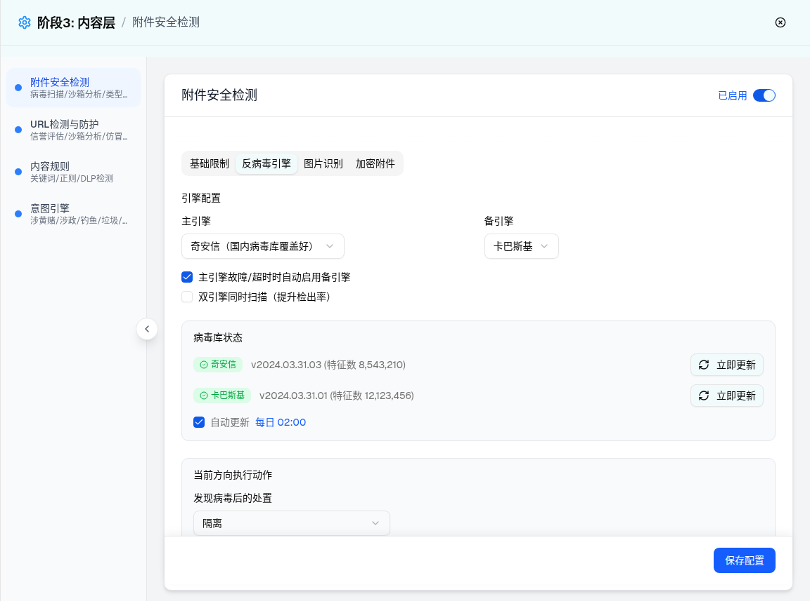
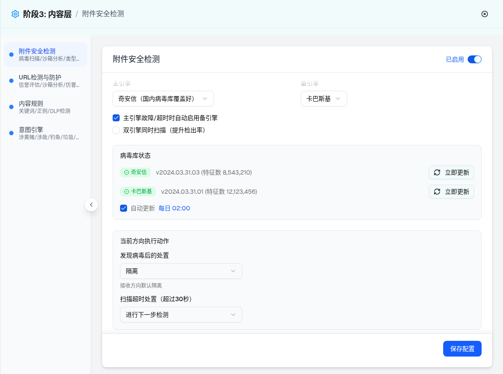

| 所属组件 | 2.3 附件安全检测配置 Tab 组 AttachmentSecurityModule |
| 主文件 | index.html |
| 触发路径 | 层级1 抽屉默认态 → Tab 组点击「反病毒引擎」→ Radix Tabs 切换（data-state=active） |
| demo 组件 | attachment-security-module.tsx → AntivirusTab（direction=receive） |
| 浏览器实测 | 面板节点总数 79；combobox 值 [奇安信（国内病毒库覆盖好）, 卡巴斯基, 隔离, 进行下一步检测]；checkbox 状态 [checked, unchecked, checked]；「立即更新」按钮 ×2。 |


| 序号 | 元素 | 默认值（receive） | 选项/校验 | 交互（浏览器实测） | i18n key（内联 LABELS） |
|---|---|---|---|---|---|
| 1 | 主引擎 Select | 奇安信（国内病毒库覆盖好） | 奇安信 / 卡巴斯基（带覆盖说明后缀） | 切换即生效并触发未保存提示；无主备相同校验（差异 D-13） | primaryEngine / qianxin / kaspersky |
| 2 | 备引擎 Select | 卡巴斯基 | 卡巴斯基 / 奇安信 / 无（短名） | 同上 | backupEngine / kasperskyShort / qianxinShort / none |
| 3 | 自动切换 Checkbox | checked | - | 切换勾选 | autoSwitch |
| 4 | 双引擎模式 Checkbox | unchecked | 勾选后右侧出现琥珀 Badge「⚠ 消耗双倍资源」（条件渲染） | 预览已复刻该条件渲染 | dualEngine / doubleResource |
| 5 | 病毒库状态区 | 奇安信/卡巴斯基均绿色在线 Badge + 版本 + 特征数（toLocaleString 千分位） | 状态三态：online 绿 / updating 黄(Clock) / offline 红(XCircle)（源码 getStatusColor，demo mock 恒 online） | 展示态 | virusDbStatus / signatures |
| 6 | 立即更新 Button ×2 | - | - | demo 未绑定 onClick，点击无反馈；PRD 要求 loading + 版本刷新（差异 D-4） | updateNow |
| 7 | 自动更新 Checkbox | defaultChecked（非受控） | 「每日 02:00」为固定文案 | 可切换但不进 config state；时间不可配置（Q8） | autoUpdate / daily |
| 8 | 发现病毒后的处置 Select | 隔离 | 隔离/审核/阻断/丢弃（4 项，实测） | 下方提示「接收方向默认隔离」 | virusAction / receiveDefault |
| 9 | 扫描超时处置 Select | 进行下一步检测 | 隔离/审核/阻断/丢弃/进行下一步检测（5 项，实测） | 标签含固定「（超过30秒）」，与基础限制 scanTimeout 值无联动 | timeoutAction |
| 比对项 | demo 实际 DOM | 提取的 HTML 预览 | 是否一致 |
|---|---|---|---|
| 面板根节点 | [role=tabpanel][data-state=active]，节点总数 79 | 预览保留三大分组（引擎配置/病毒库状态/执行动作）核心结构 | 一致（结构裁剪展示） |
| combobox 值 | [奇安信（国内病毒库覆盖好）, 卡巴斯基, 隔离, 进行下一步检测] | 4 个 select 同默认值 | 一致 |
| checkbox 状态 | [checked, unchecked, checked]（自动切换/双引擎/自动更新） | 同状态 | 一致 |
| 双倍资源 Badge | dualEngineMode=false 时未渲染（条件节点） | 默认隐藏，勾选后出现 | 一致 |
| 按钮 | 「立即更新」×2，无事件绑定 | 同文案，title 注明无反馈 | 一致 |
| 特征数文案 | 「v2024.03.31.03 (特征数 8,543,210)」「v2024.03.31.01 (特征数 12,123,456)」 | 同文案 | 一致 |